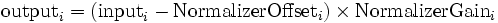

Normalizer
User Reference
Contents |
Function
Normalizing Transform
The Normalizer applies a linear transformation to its input signal. For each channel (index denoted with i), an offset value is subtracted, and the result multiplied with a gain value:

Adaptation
From the past statistics of its input, the Normalizer estimates offset and gain values adaptively to make its output signal
- zero mean, and
- unit variance.
The Normalizer uses data buffers to accumulate its past input according to user-defined rules. These rules are called buffer conditions because they are given in terms of boolean expressions. Each data buffer is associated with such a boolean expression. Whenever an expression evaluates to true, the current input will be appended to the associated buffer. Whenever it comes to updating offset and gain values, the Normalizer will use the content of its buffers to estimate data mean and variance. The offset will then be set to the data mean, and the gain to the inverse square root of the data variance, i.e., the inverse of the data standard deviation.
Adaptation Delay
One may suggest that the adaptation time may affect the accuracy of the cursor movement in mu rhythm experiments. However, the reference below shows that computing the normalization parameters either during or at the end of the trials leaded to similar results. Hence, in the current version of BCI2000, adaptation of the signal mean is accomplished at the end of each trial and using a Moving Average Algorithm.
Ramoser H, Wolpaw JR, Pfurtscheller G, "EEG-based communication: evaluation of alternative signal prediction methods". Biomed Tech (Berl); 42(9) : 226-33, Sep, 1997.
- From the article abstract-Individuals can learn to control the amplitude of EEG activity in specific frequency bands over sensorimotor cortex and use it to move a cursor to a target on a computer screen. For one-dimensional (i.e., vertical) cursor movement, a linear equation translates the EEG activity into cursor movement. To translate an individual's EEG control into cursor control as effectively as possible, the intercept in this equation, which determines whether upward or downward movement occurs, should be set so that top and bottom targets are equally accessible. The present study compares alternative methods for using an individual's previous performance to select the intercept for subsequent trials. In offline analyses, five different intercept selection methods were applied to EEG data collected while trained subjects were moving the cursor to targets at the top or bottom edge of the screen. ... Due to its consistent performance and its computational simplicity, the moving average method, using the five most recent pairs of top and bottom trials, appears to be the method of choice.
Adaptation Rationale
It may appear crude to use the total data variance for the adaptation -- why not use linear regression on data labels (target codes) to separate into user controlled (task determined) and noise variance? User controlled variance would then correspond to target separation on the feedback screen, which is what we want to normalize in the first place.
However, a closer look reveals that the relative size of user controlled variance, and noise variance is crucial. When that "signal" variance is small compared to noise variance, we would be ill advised to use it in normalization -- this would only lead to enlarged noise, and an erratically moving cursor on the feedback screen. In this case, we rather want to normalize by noise variance, to keep the cursor well-behaved. At the same time, total variance approaches noise variance in this limit because signal variance is small.
On the other end of the spectrum, we have a signal variance that is large compared to noise variance. Here, we clearly want normalization by signal variance. However, the total variance will be dominated by signal variance. Thus, in the limit of high signal-to-noise ratio, total variance again is the quantity by which we want to normalize.
Thus, no matter whether signal-to-noise ratio is high or low, total data variance is a good choice for normalization.
Typical Use
Typically, the Normalizer's input is the output of a classifier, which it transforms into a zero mean/unit variance control signal which is then transmitted to an application module. Using the zero mean/unit variance property, an application module can then relate quantities such as window size, screen update rate, cursor speed, and trial duration.
Parameters
For each channel of the Normalizer's input signal, adaptation is treated independently. Offsets, Gains, and Adaptation kind are represented as list parameters, with each entry in the list corresponding to a signal channel. Buffer configuration is done in matrix form, with columns corresponding to signal channels, and rows corresponding to multiple buffers.
NormalizerOffsets, NormalizerGains
Lists of offset and gain values, with entries corresponding to signal channels. These values will be updated depending on the channel's adaptation configuration in the Adaptation parameter.
Adaptation
A list of values that determines adaptation strategy individually for each channel. Possible values are
- 0 for no adaptation,
- 1 for adjusting offsets to zero mean,
- 2 for additionally adjusting gains to unit variance.
BufferConditions
A matrix consisting of boolean expressions. Expressions may involve state variables and the components of the Normalizer's input signal.
- Each matrix entry represents a data buffer which is a ring buffer of length BufferLength. Whenever a buffer's expression evaluates to true, the current value of the input signal will be put into the buffer (overwriting its oldest data once the buffer is filled).
- Columns correspond to control signal channels. Buffers in a certain column will buffer data from the corresponding signal channel, and will be used in adaptation of that channel only.
- Within columns, the order of buffers does not affect computation.
- Empty expressions do not have any effect on the computation. Thus, it is possible to have a different number of buffers for different channels.
- A buffer to store data for the first target, and during feedback only, should have an expression such as
(Feedback)&&(TargetCode==1).
BufferLength
The maximum length of each data buffer.
- The length is specified in data blocks if given as a raw number, and in seconds if given as a number followed by the character "s".
- All data buffers have the same capacity.
- Once a data buffer is filled, its older entries will be replaced with new data (ring buffer).
- In previous versions of BCI2000, buffer lengths were specified in terms of "past trials". However, this would enforce the notion of a "trial", and not generalize to continuous adaptation.
UpdateTrigger
A boolean expression that triggers adaptation when changing to true from false.
Generally, continuous adaptation within trials is not desired. Rather, one wants adaptation to occur at the end of a trial. This is achieved with UpdateTrigger expressions such as Feedback==0 or TargetCode==0.
For continuous adaptation, specify an empty string in the UpdateTrigger parameter.
States
Buffer condition expressions, and the UpdateTrigger expression may involve any state present in the system. Expressions are checked for syntactical correctness and whether referred-to states are present during the Preflight Phase.
Examples
Trial-based 1D Feedback Task with 3 Targets
- Only data from the feedback phase should enter into the adaptation.
- To make sure that targets contribute equally to the adaptation, we use a single buffer for each target. We use a 3-rows-by-1-column BufferConditions matrix (see below). Depending on which control signal should be adapted on, all of these conditions need to be entered in the first, second, or third column of the matrix (corresponding to x, y, and z direction when used with the CursorTask application module).
(Feedback)&&(TargetCode==1) (Feedback)&&(TargetCode==2) (Feedback)&&(TargetCode==3)
- We want to use data from three previous trials of each target.
- Feedback duration is 2 seconds. We set the buffer length to the equivalent of three feedback durations:
BufferLength= 6s
- Adaptation should happen at the end of each trial, when feedback is finished. We set UpdateTrigger to an expression that changes to true when feedback ends:
UpdateTrigger= (Feedback==0)
- To achieve continuous movement in, say, the x direction we need a constant normalizer output on that channel. To be consistent with the task module's FeedbackDuration parameter, this output should be constant +2 in order for the cursor to cross the entire screen during a trial, and +1 when cursor movement begins at the screen's center. This corresponds to the following settings for the channel in question:
Adaptation= 0 NormalizerOffset= -1 NormalizerGain= 2 or 1, respectively.
Trial-based 2D Feedback Task with 4 Targets
- Leaving everything else as in the previous example, we now have two dimensions corresponding to left-right (channel 1) and up-down (channel 2).
- Target positions are as indicated below:
--------------------------- | ##1## | |# #| |2 3| |# #| | ##4## | ---------------------------
- We use data from targets 1 and 4 to adjust channel 2, and targets 2 and 3 to adjust channel 1. Accordingly, the BufferConditions matrix is
(Feedback)&&(TargetCode==2) (Feedback)&&(TargetCode==1) (Feedback)&&(TargetCode==3) (Feedback)&&(TargetCode==4)
Continuous 1D Control without pre-defined Targets
- For this example, we know that, over a period of 10 minutes, all output values will occur with approximately equal frequency, or at least have a symmetric distribution around zero. This matches the combination of BCI2000 and Dasher or other "devices" expecting statistically balanced input.
- The BufferConditions matrix will have a single entry containing a constant expression:
1
- This way, data will always be buffered.
- There are no trials. We want a continuous adaptation to the values of the last 10 minutes.
- We set the BufferLength parameter to
600s, or(10*60)s. - For continuous adaptation, we enter an empty string (not a constant 0 expression) for UpdateTrigger.
![[BCI2000 Help]](../../images/bci2000logo_small.png)